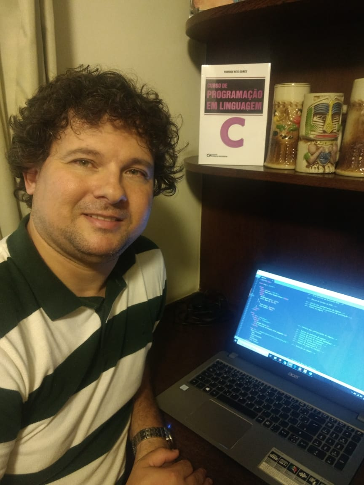

Currículo:
- Possui graduação em Ciência da Computação pela Universidade Federal do Rio de Janeiro (1999) e mestrado (2003) e doutorado (2012) em Modelagem Computacional pela Universidade do Estado do Rio de Janeiro, tendo atuado na linha de pesquisa intitulada Matemática Aplicada e Computação Científica.
- É professor desde 2002 e servidor público desde 2008, ocupando atualmente o cargo de Professor do Mestrado em Educação Básica, Técnica e Tecnológica do CEFET/RJ.
- Tem experiência na área de Ciência da Computação, com ênfase em Linguagens de Programação, Modelagem Computacional, Linguagens Formais e Autômatos, Sistemas de Informação e Lógica e Semântica de Programas.
